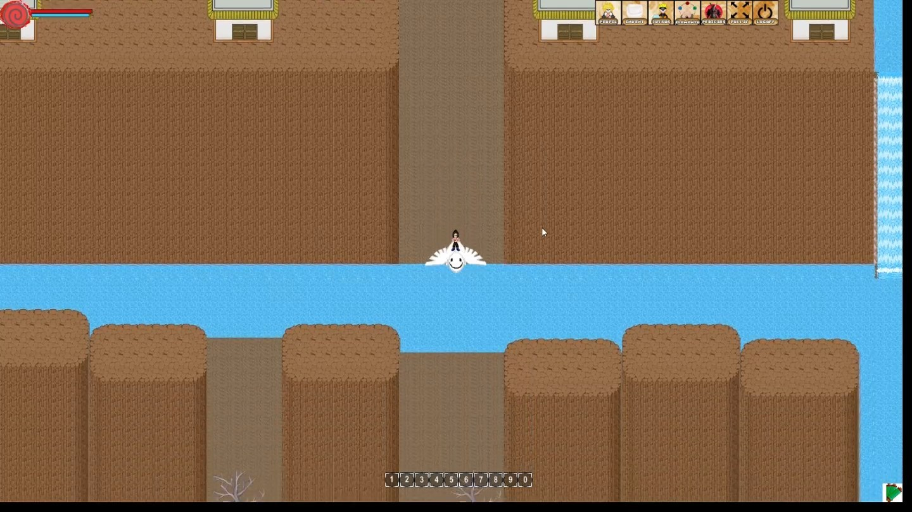

Este foi um dos meus primeiros jogos na plataforma BYOND (2008), antes de tudo, ja tive bastante jogos no RPG Maker 2000,
Em meiados de 2008 no auge do anime Naruto criei um jogo chamado Naruto Shippuuden Dattebayo, carinhosamente chamado de NSD,
este jogo era um MMORPG baseado no universo do Naruto.
Fiz este jogo sozinho.
Exemplo do Grafico do NDS1 com sistema de dia e noite
Um exemplo dos sprites que eu precisava montar para executar uma habilidade do clã hyuuga
Conforme fui evoluindo na programação, os codigo para o NSD2(2009) ficaram mais avançados, precisei refazer o jogo para ficar mais bonito visualmente e com codigo mais limpo com novas mecânicas
Nesta epoca se juntou a equipe uma pessoa chamada Abner que viu meu esfoço e quis começar a me ajudar no pixel art.
Um exemplo de como os graficos evoluiram do NSD1 para o NSD2
Depois decidimos relançar o NSD para sua 3 versão(2010), novamente limpando e otimizando mais os codigos
Os graficos com a ajuda do Abner melhoraram, os jutsus (habilidades) tambem melhoraram bastante.
Este era um exemplo do mapa que criamos, um mapa mundo 1000x1000
Ele precisou ser divido em 2 partes para exemplificar as 5 vilas, conforme no anime.
Nesta época se juntou a equipe um jogador que se chamada Yown, que ficou responsavel pelo
Host 24/7 e o mapa.
Um exemplo de como ficou o pixel art com a nova equipe
Depois decidimos relançar o NSD para sua 3 versão(2010), novamente limpando e otimizando mais os codigos
Os graficos com a ajuda do Abner melhoraram, os jutsus (habilidades) tambem melhoraram bastante.

Apos muitos anos (2022) refiz o NSD sozinho com novas habilidade que tive em Photoshop,
Programação e experiência em games.
Aproveitei e melhorei o mapa, coloquei bastante sistema de sobrevivencia, sistema de guerra, Roleplay, segredos e muito mais.
Porém manter o jogo ligado 24/7 estava muito difícil para mim e não consegui mantê-lo.
Trailer do NSD Remake
Em 2013 fiz um curso de jogos no Inove em Belo Horizonte, meu projeto final foi um jogo feito em Game Maker estilo Super Mario.
Em 2013 criei um MMORPG no BYOND inspirado em Cavaleiros do Zodíaco.
Primeiros testes da criação do SSO
Aproveitei que era sobre mitologia Nordica e criei o Kratos como evento,
Neste evento ele se juntava para matar todos os jogadores, quem ganhasse o evento e conseguisse mata-lo, ganha um item raro.
Testando o Cerberus no Submundo

Um Exemplo de como funcionava o PVP

Salão de Athena

Os Cavaleiros de Bronze (Todos jogadores)
Evento Saint Seiya Online
Jogo de Tabuleiro que desenvolvi em Godot no Estagio de Informatica da Crivosoft
Prototipo da UI Full
Alteracao do Design dos Marcadores
Pagina de Regras
Pagina de Regras 2
Pagina de Regras 3

Exemplo de Design de Cartas de Tecnologia

Exemplo de Design de Cartas de Politica

Exemplo de Design de Cartas de Penalizacoes